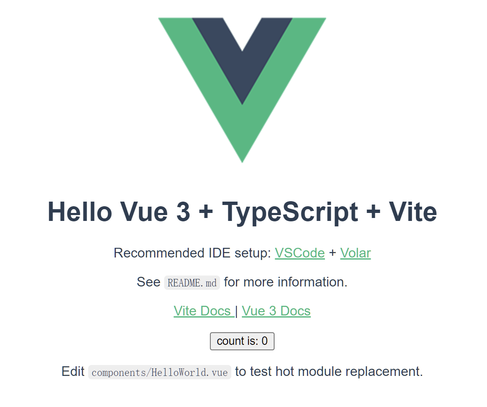
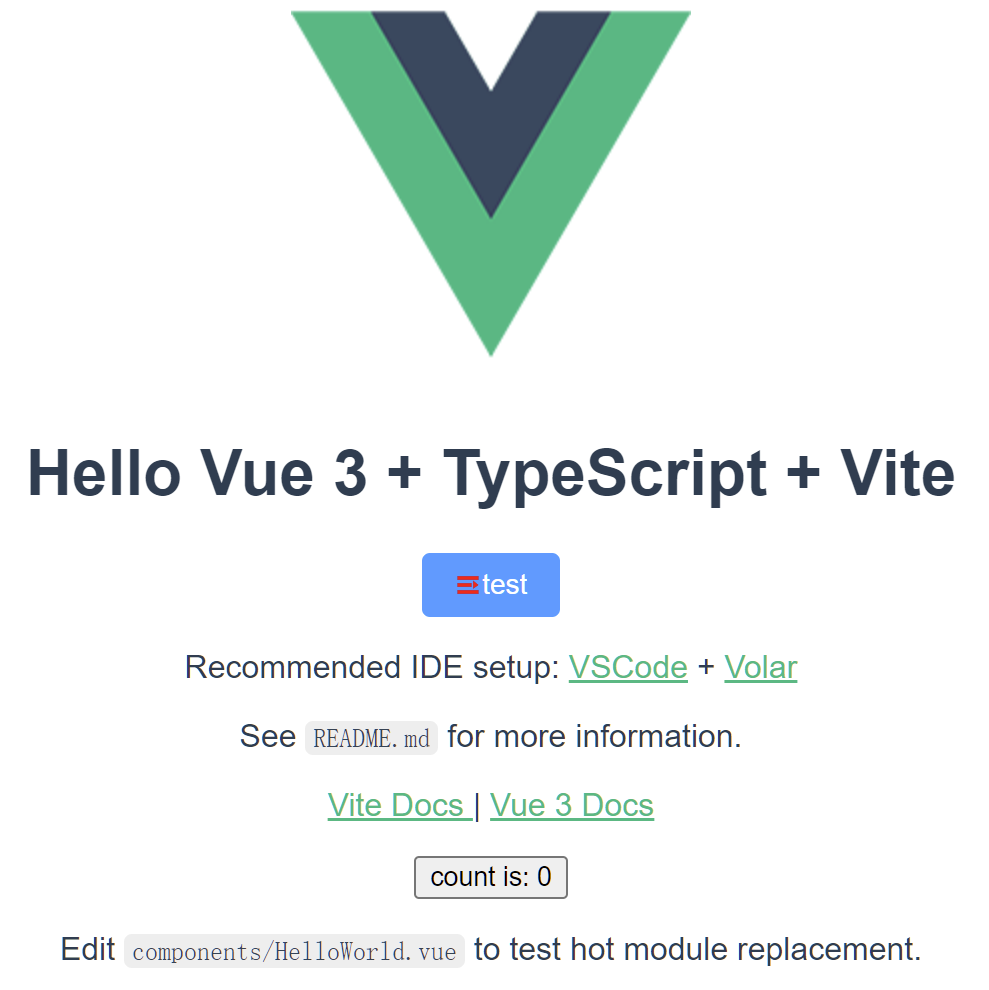

最終更新日2022年4月16日 午後
概要 今回はVue.jsのデフォルトバージョンになる「Vue3」を用いて、ゼロから一つの管理システムを作ると思います。
環境 Node.jsとnpmバージョン
create viteでプロジェクト作成 参考：公式サイト npm -vでnpmのバージョンを確認する
1 2 3 4 5
プロジェクトのmtoolが作成されました。
1 2 3 4 5 6 npx : installed 6 in 3 .147 sScaffolding project in C:\files\workspaces\vue3\mtool...Done . Now run:cd mtoolnpm installnpm run dev
次のコマンドにより初期化
1 2 3 4 5 6 7 8 9 10 11 12 13 cd mtoolin 227ms.

ElementPlus 上記の手順により、Vue3が起動しました。公式サイト
インストール 1 2
配置(オートインポート) 先ずは二つのプラグインをインストールする。
1 2
次はvite.config.tsを編集する
1 2 3 4 5 6 7 8 9 10 11 12 13 14 15 import AutoImport from 'unplugin-auto-import/vite'
使い方 1 2 3 4 5 <template>
icon インストールと配置 ElementPlusのiconとオートインポートのプラグインをインストールする
1 2 npm install @element-plus/icons-vue
vite.config.tsを編集する
1 2 3 4 5 6 7 8 import Icons from 'unplugin-icons/vite'
使い方 1 2 3 4 5 6 7 8 <template>
結果 
次回の投稿 vue-routerについて